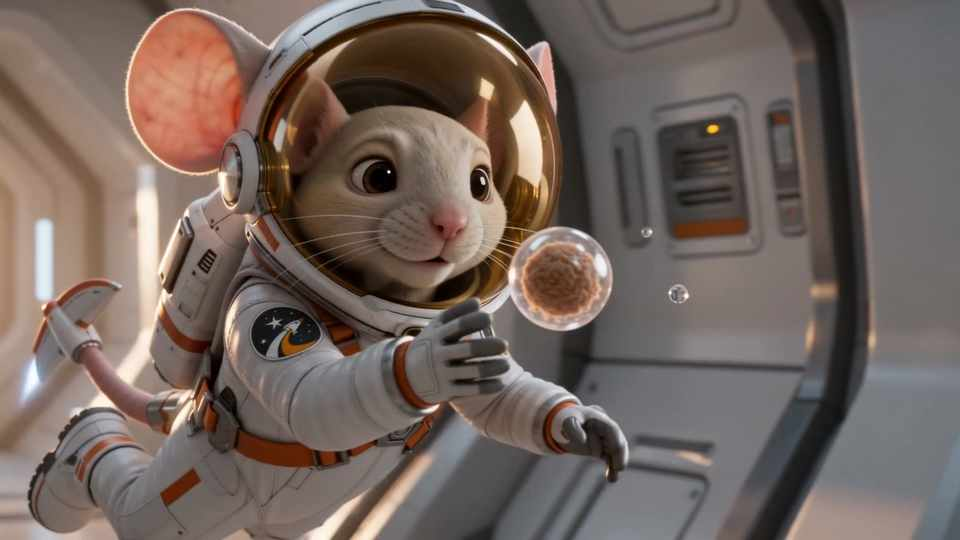

Commander Pip: Live Interactive Orbital World
Real-time 16:9 world simulation seeded from Commander Pip's orbital habitat. Steer with WASD + Arrow keys and trigger live environment events mid-stream.

Real-time 16:9 world simulation seeded from Commander Pip's orbital habitat. Steer with WASD + Arrow keys and trigger live environment events mid-stream.
